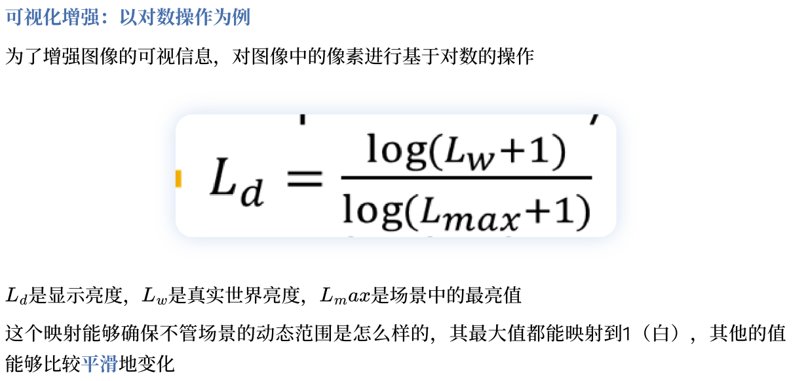
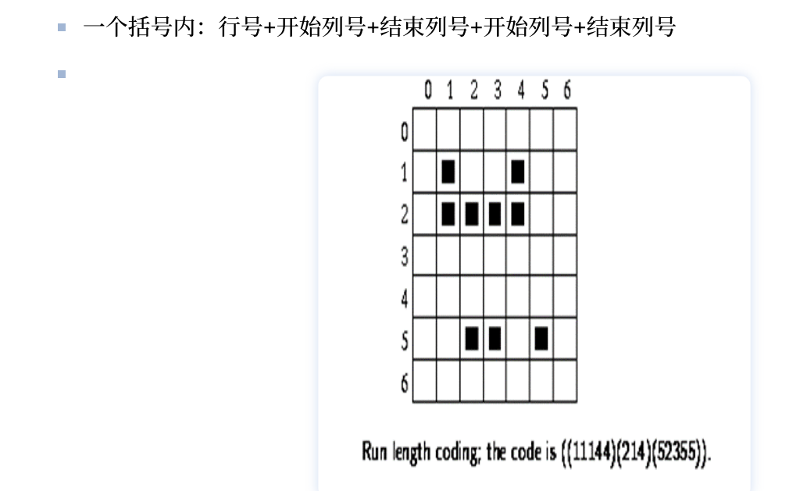

历年卷汇总及答案整理¶
说明：
历年卷来源
参考笔记：hobbitqia&jiepeng's notes
感觉dip这门课面向历年卷复习很有必要，我们这一届考试的时候80%以上都是之前考过的，由于是闭卷所以要尽可能背准确
答案是自己做的，可能会有一些小问题
2022-2023秋冬学期真题¶
注：题目是中英对照的，回答用中文或英文均可
一、填空题（1*n）¶
-
Digital image (or video stream) 数字图像 is the main form to present information. For human being, more than 60% information are obtained by vision 视觉.
-
设备相关的颜色空间：（RGB）（CMY）（HSV）；设备无关的颜色空间：（CIE xyz）（CIE
L*a*b）（CIE YUV） -
Image Data 要求每一行必须是 4 的倍数，例如
13 A1 17 19 18 15在文件中存储为：（13 A1 17 19 18 15 00 00） -
BMP图像的文件结构：（IMAGE FILE HEADER）（IMAGE IMFORMATION HEADER）（PALETTE）（IMAGE DATA）
二、说明题¶
-
数码相机成像原理（6'）
-
JPEG压缩的基本思想和优势
压缩策略：根据压缩比要求，从高频到低频逐步削减信息
优势：高频信息占用存储空间大，减少高频信息更容易获得高压缩比；低频信息可以保留物体的基本轮廓和色彩分布，最大限度维持图像质量；适合用于互联网的视觉媒体。 -
BMP图像调色板的作用（4'）
将颜色重新编码，使其在低位的情况下可以最大程度地保留原来的颜色 -
获取二值图像时，如何确定一个好的阈值
-
腐蚀操作的物理意义；给出 input image 和 struct element 要求画出腐蚀后的矩阵
消除边界点，使边界向内部收缩的过程。可以⽤来消除⼩且⽆意义的物体。

-
解释可视化增强的对数操作 
-
直方图均衡化为什么不能做到真正均衡
步骤2中，所得的sk不可能正好等于8级灰度值中的某一级，因此需要就近归入某一个灰度级中。这样，相邻的多个sk就可能落入同一个灰度级，需要在步骤3时将处于同一个灰度级的像素个数累加。因此，离散灰度直方图均衡化操作以后，每个灰度级处的概率密度（或像素个数）并不完全一样。 -
解释最近邻插值的过程
-
表情比例图的方法
-
写出双边滤波的 general idea 和双边滤波与高斯滤波的区别
一幅图像有两个主要特征:
空间域S，它是一幅图像中可能位置的集合。这与分辨率有关，也就是图像中的行数和列数。
强度域R，是可能像素值的集合。用来表示像素值的位数可能会变化。常见的像素表示形式是无符号字节(0到255)和浮点数。
同时考虑Space Domain S和Intensity Domain R，把图片分成大尺度特征、结构和小尺度特征、纹理两部分。
高斯滤波只考虑了空间域，而双边滤波由于考虑了intensity domain，因此具有保边的作用。 -
SIFT 的 full version
-
Back-propagation 的方法

-
RLE（给一张图，要求写出编码） 
三、计算题（5）¶
- w=0.8, 模型取点数为3，问最少要取几个点才能保证概率>95%RANSEC收敛
(1-0.8^3)^n = 1 - 0.95
RANSEC:
- 选择出可以估计出模型的最⼩数据集；
- 使⽤这个数据集来计算出数据模型；
- 将所有数据带⼊这个模型，计算出“内点”的数⽬
- ⽐较当前模型和之前推出的最好的模型的“内点“的数量，记录最⼤“内点”数的模型参数和“内点”数；
- 重复1-4步，直到迭代结束或者当前模型已经⾜够好了(“内点数⽬⼤于⼀定数量”)。
四、证明题（4+6）¶
-
请证明膨胀和腐蚀的对偶关系（4'）

-
请证明SNF中p=1时是中值滤波，p=2时是均值滤波（6'）
中值滤波就是一堆绝对值相加，最小值在中值处取到
均值滤波就是求导，导数零点的解就是均值

2021~2022秋冬学期真题¶
-
为什么说数字图像是信息的主要展示方式？成像方式有哪些？
可见光、X射线、超声波、红外线 -
给出相机的示意图，描述相机的成像过程
重复 -
(1) 设备无关的颜色有哪些？设备有关的颜色有哪些？
重复
(2) 假如RGB的颜色空间是一个正立方体，那么(0,0,0)到(1,1,1)这条对角线表示什么？
灰度从255到0的从黑到白的消色 -
JPEG图像的压缩策略是什么？有什么优点？
重复 -
(1) 给定结构元和图像，画出腐蚀操作的结果。并说说腐蚀操作的意义
重复
(2) 在(1)的基础上，画出膨胀操作的结果
开运算 -
给定图像，写出行程编码，并说明行程编码的原理
重复 -
写出对数增强的过程
重复 -
直方图均衡化的结果分布不均匀的原因
重复 -
双线性插值的过程
（1）定义双线性方程g(x,y)=ax+by+cxy+d。
（2）分别将A、B、C、D四点的位置和灰度代入方程，得到方程组。
（3）解方程组，解出a、b、c、d四个系数。
（4）将P点的位置代入方程，得到P点的灰度。 -
导向滤波和双边滤波相比有什么优点
 保边（保梯度就一定能保边，反之不一定）
保边（保梯度就一定能保边，反之不一定）
非迭代
O1的时间，快且不需要通过近似的方法
不存在梯度逆转的问题 -
Harris角点检测公式推导以及如何判断


-
CNN中的池化是什么？有什么作用？
池化（Pooling），在深度学习领域，特别是在卷积神经网络（CNN）中，是一种缩减采样（Downsampling）或子采样（Subsampling)技术，通常用于减少数据的维度，降低处理复杂度，同时保留重要的信息。池化操作可以减少模型对位置的敏感性，增加模型对小的变化和扰动的鲁棒性，并减少参数数量，从而帮助防止过拟合。
常见的池化操作有：- 最大池化（Max Pooling）：在覆盖的区域内取最大值作为该区域的输出。
- 平均池化（Average Pooling）：计算覆盖区域内所有元素的平均值作为输出。
- 全局池化（Global Pooling）：例如全局平均池化（Global Average Pooling），在整个宽度和高度上进行池化，通常用在网络的最后几层，将每个特征图缩减为单个值。
池化的意义主要体现在以下几个方面：- 特征不变性：通过池化，网络能够对输入图片中的小变动保持不变性，比如平移、旋转和缩放。
- 降低维度：池化减少了后续层的输入数据的大小，这意味着计算量和参数数量降低，内存使用也减少。
- 防止过拟合：由于减少了模型的参数数量和复杂度，池化有助于防止模型过度适应训练数据的细节，即过拟合现象。
- 强化特征：最大池化有助于突出强特征，忽略不那么显著的特征。
综上所述，池化是深度学习中一种重要的操作，它在简化网络结构的同时帮助提取和保留关键特征，对于构建高效和强大的卷积神经网络至关重要。
- 特征不变性：通过池化，网络能够对输入图片中的小变动保持不变性，比如平移、旋转和缩放。
- 最大池化（Max Pooling）：在覆盖的区域内取最大值作为该区域的输出。
- 直方图均衡化计算

2020~2021秋冬学期真题¶
-
图像与图形在来源/应用方面的不同，举3种成像方式
图像和图形是视觉表现形式，它们在来源和应用方面存在一些显著的不同：
来源差异：
图像(Image)
真实来源：图像通常指的是通过摄影、扫描或其他数字捕捉技术获得的真实世界的视觉表示。这包括数码照片、扫描的文档和实时视频流。
像素构成：数字图像通常由像素组成，这些像素在屏幕上排列成网格，每个像素包含颜色信息。
图形(Graphic)
设计创作：图形指的是由图形设计师或艺术家创作的视觉元素，这些元素可以是插画、设计图案、图标、类型排印、动画或者是通过计算机软件生成的3D模型。
向量或位图：图形可以是基于向量的（由形状和线条组成，可以无限缩放而不失真）或者是位图（由像素组成，放大后可能会失真）。
应用差异：
图像(Image)的应用
摄影：个人和专业摄影、新闻摄影、肖像摄影等。
文档记录：身份证明、法律文件扫描、历史档案数字化等。
娱乐：电影、电视节目、视频游戏中的实景或者CGI（电脑生成图像）。
监控：安全监控、交通管理、环境监测等。
图形(Graphic)的应用
品牌和广告：公司标识、广告、市场推广材料等。
用户界面设计：网站、应用程序、软件界面的图标、按钮、布局等。
信息可视化：图表、地图、信息图解等，用于呈现数据和信息。
艺术和娱乐：漫画、动画、视频游戏中的角色和场景设计等。
在实际使用中，图像和图形往往可以相互结合，如在广告设计中融合摄影图像和图形元素，或者在电影特效中将实拍图像与计算机生成图形结合。不同的来源和应用使得图像与图形各有其特点和优势，但它们在视觉传达中都扮演着至关重要的角色。
成像方式重复了 -
介绍数码相机生成图片的过程
重复 -
哪些因素会对景深有影响？如何影响？
(1) 镜头光圈：光圈越大，景深越小；光圈越小，景深越大；
(2) 镜头焦距：镜头焦距越长，景深越小；焦距越短，景深越大；
(3) 拍摄距离：距离越远，景深越大；距离越近，景深越小。 -
HSV各个字母的意思，画简图表示HSV，以及比RGB好在哪里

-
如何生成高质量二值化图片（大津+局部自适应）
感觉和23年的4差不多，再加一个滚动窗口？ -
开运算和物理意义

-
给图，写直方图匹配过程

-
给trump到abama的morph图，问如何morph
根据变换的快慢，设置相应的步长，将图a每一点的RGB逐渐变成图b相同位置像素的RGB。可以选择等比或等差的方式，对于灰度图像，可以直接用等比或等差级数定义步长，使颜色从原图变到目标图。对于彩色图像，RGB三色同时从原图变到目标图像。可以分别变化，也可考虑RGB的相对比例关系同时变化。

-
给了6×6的矩阵，用3×3的窗口算中值与拉普拉斯滤波（计算量巨大）
用对应窗口加权求和，边界用补0处理？ -
双边滤波的基本思想与各个项的解释
基本思想重复
-
SIFT步骤与如何实现旋转不变性，SUFT步骤
实现旋转不变性：获取特征点和对应尺度，分成\(4*4\)的窗口，每个窗口统计像素梯度形成\(4*4*8=128\)维向量，并且取最高频方向作为优势方向，将其旋转至标准的给定方向。 -
给你PPT上的那两张图，问如何拼接图像
检测两张图像的特征点，找到对应的点对，用这些点对对齐图像
尺度——放大缩小
方向——直方图统计、旋转

-
给图，写BP全过程
重复
这个可能会考：

 交叉熵（含义，交叉熵损失）
交叉熵（含义，交叉熵损失）
\(L=-log(P_c)\)
用作损失函数（Loss Function），用于衡量模型预测概率分布与真实标签的概率分布之间的差异